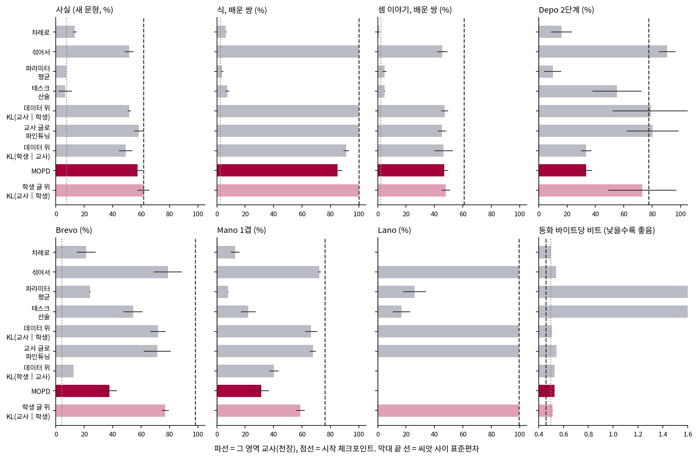

같은 시험으로 나란히 재기
학생들은 모두 동화 5,000 스텝 체크포인트에서 시작해 같은 3,000 스텝을 학습한다. 비교 기준은 원 논문의 네 기준을 우리 크기로 옮긴 것이다. 강화학습을 쓰는 곳은 셈 교사의 GRPO 뿐이라, 원 논문의 Mix-RL 은 「섞어서 지도 파인튜닝」, Cascade RL 은 「차례로 가르치기」가 된다. 나머지 넷은 교사 넷을 쓰는 증류와 그 변형이다.
mix (272초, 처리 토큰 12,312,416) | 사실 0.525 바뀜 0.225 | 식 배운 1.000 새 0.380 이야기 배운 0.406 새 0.183 | depo1 1.000 depo2 0.840 brevo 0.840 mano1 0.735 mano2 0.065 lano 0.995 | 바이트당 비트 0.5403
mopd (2450초, 처리 토큰 23,135,584) | 사실 0.550 바뀜 0.250 | 식 배운 0.846 새 0.207 이야기 배운 0.486 새 0.073 | depo1 0.965 depo2 0.275 brevo 0.315 mano1 0.350 mano2 0.055 lano 0.000 | 바이트당 비트 0.5283
씨앗 0 의 두 줄이고(sources/mopd/student_mix_s0.out, student_mopd_s0.out), 괄호의 초는 다른 학습과 GPU 를 나눠 쓴 값이다.
sources/mopd/summary.out 의 값을 표로 모으면 다음과 같다. 정규화 점수는 원 논문처럼 시작을 0, 교사를 1 로 삼아 사실, 셈(식과 이야기), 추론(Mano 2 겹을 뺀 다섯) 세 영역을 평균한 것이다. 동화는 바이트당 비트로 따로 적었는데, 바이트당 비트를 같은 방식으로 나누면 값이 수백 배로 튀어서 평균의 뜻이 사라지기 때문이다.
| 방법 (씨앗 수) | 사실 | 식 | 셈 이야기 | Depo 2단계 | Brevo | Mano 1겹 | Lano | 바이트당 비트 | 정규화 | 300 스텝 시간 |
|---|---|---|---|---|---|---|---|---|---|---|
| 시작 체크포인트 | 7.5 | 2.4 | 2.1 | 0.0 | 4.0 | 0.0 | 0.0 | 0.4972 | 0 | |
| 교사(천장) (3) | 61.7 | 100.0 | 60.7 | 77.5 | 98.0 | 76.2 | 99.5 | 0.4578 | 1 | 교사 넷 합 213초 |
| 차례로, 끝이 동화 (3) | 13.3 | 6.4 | 1.0 | 16.2 | 21.3 | 13.0 | 0.2 | 0.4991 | 0.102 | 교사와 같은 처방 |
| 파라미터 평균 (3) | 7.5 | 3.8 | 4.8 | 10.0 | 24.0 | 7.8 | 26.0 | 2.1441 | 0.068 | 1초 + 교사 |
| 태스크 산술 (3) | 6.7 | 7.4 | 4.7 | 55.2 | 54.3 | 22.2 | 16.8 | 11.2814 | 0.184 | 1초 + 교사 |
| 섞어서 지도 파인튜닝 (3) | 51.7 | 100.0 | 45.5 | 90.5 | 78.8 | 72.3 | 99.5 | 0.5400 | 0.904 | 14초, 교사 없음 |
| 교사가 쓴 글로 지도 파인튜닝 (3) | 58.3 | 100.0 | 45.3 | 80.3 | 71.3 | 67.7 | 99.5 | 0.5434 | 0.917 | 80초 + 교사 |
| 데이터 글 위 KL(교사‖학생) (3) | 51.7 | 100.0 | 47.0 | 79.2 | 71.8 | 66.5 | 99.5 | 0.5074 | 0.876 | 17초 + 교사 |
| 데이터 글 위 KL(학생‖교사) (3) | 49.2 | 91.1 | 46.4 | 33.5 | 12.5 | 40.2 | 0.0 | 0.5279 | 0.660 | 재지 않음(겹쳐 잰 값은 순방향과 비슷) + 교사 |
| MOPD: 학생 글 위 KL(학생‖교사) (3) | 57.5 | 85.0 | 46.8 | 33.5 | 37.7 | 31.3 | 0.0 | 0.5286 | 0.731 | 96초 + 교사 |
| 학생 글 위 KL(교사‖학생) (3) | 61.7 | 100.0 | 48.0 | 73.0 | 76.8 | 58.8 | 99.5 | 0.5131 | 0.933 | 81초 + 교사 |
정답률은 %, 씨앗 평균이다. 표준편차는 대부분 5 포인트 안팎이고, 큰 곳은 Depo 2 단계(79.2 ± 27.0, 73.0 ± 23.8, 80.3 ± 18.2), Brevo(섞어서 78.8 ± 9.9, 교사가 쓴 글로 71.3 ± 9.4), 태스크 산술의 바이트당 비트(11.28 ± 2.74)다. 300 스텝 시간은 이 GPU 에서 내 다른 작업 없이 잰 값이고(sources/mopd/bench.out), 3,000 스텝이면 대략 열 배로 추정한다. 처음에는 교사가 쓴 글로 지도 파인튜닝, 데이터 글 위 역방향, 학생 글 위 순방향을 씨앗 둘만 돌렸다가 뒤에 씨앗 2 를 더했다(sources/mopd/queue_verify.sh). 토큰 평균으로 합친 MOPD 는 씨앗 0 하나뿐이라 표에서 뺐는데, 점수는 사실 57.5, 식 89.6, Brevo 12.5, 바이트당 비트 0.5215 였다.

표에서 먼저 읽히는 것은 파라미터 합치기의 실패다. 평균은 정규화 0.068 로 시작과 거의 같고, 동화 실력은 2.1441 로 망가졌다. 교사들이 많이 움직인 만큼 평균이 어느 교사의 영역에서도 쓸모없는 곳에 떨어진 것으로 보인다. 태스크 산술은 합성 시험 쪽에서 일부 살아남았지만 동화는 11.2814 로 사실상 사라졌다. 원 논문이 3백억 파라미터에서 태스크 산술에 0.857 을 준 것과 크게 다른 결과인데, 교사가 체크포인트에서 멀리 움직인 우리 조건과 작은 크기 탓이 아닐까 짐작할 뿐 재지는 않았다.
MOPD 를 그대로 하면 졌다
민준이 표를 보다가 MOPD 줄에서 멈췄다.

잠깐, 제일 비싼데 제일 나쁜 축이잖아. 섞어서 가르친 게 14초고 MOPD 는 96초인데. Lano 는 0 이고.

그런데 Lano 가 0 인 줄이 또 있어. 데이터 글 위에서 KL(학생‖교사) 를 쓴 줄. 두 줄이 같은 건 글이 아니라 방향이잖아.
방향과 글을 나눠 보면 표는 2×2 가 되는데, 세 영역 정규화 점수와 Lano 만 뽑으면 다음과 같다.
| KL(교사‖학생) | KL(학생‖교사) | |
|---|---|---|
| 데이터 글 위 | 0.876, Lano 99.5 | 0.660, Lano 0.0 |
| 학생이 뽑은 글 위 | 0.933, Lano 99.5 | 0.731, Lano 0.0 |
표를 한 칸씩 옮겨 보면 방향을 바꾸는 효과가 글을 바꾸는 효과보다 훨씬 크다. 역방향 KL 은 이 실험의 조건에서 교사의 능력을 옮기지 못했고, 뽑은 글로 옮겨 가는 이득은 그보다 작았다. 다만 뽑은 글의 이득이 없지는 않다. 사실 점수는 데이터 글 위 51.7, 49.2 에서 학생 글 위 61.7, 57.5 로 두 방향 모두 8 포인트 넘게 올랐고, 씨앗 사이 표준편차는 5 포인트 아래였다. 사실 영역은 뽑는 글이 긴 곳이다(토큰 32 개). 합성 시험에서는 고르지 않았다. 순방향의 Brevo 는 71.8 에서 76.8 로 표준편차 안에서 올랐고 Mano 1 겹은 66.5 에서 58.8 로 내렸다. 역방향은 Brevo 가 12.5 에서 37.7 로 크게 오르고 Mano 1 겹은 40.2 에서 31.3 으로 내렸다(sources/mopd/exam_lengths.out 에 따르면 답은 Depo 가 2 토큰, Brevo 가 평균 3.4 토큰, Mano 가 평균 3.6 토큰, Lano 가 평균 6.9 토큰이다). 온폴리시가 답이 긴 영역에서 이득을 낸다는 짐작에 맞는 칸도 있고 안 맞는 칸도 있으니, 씨앗 셋과 영역 넷으로 한 번 본 모양이라고 해 두자.
역방향 KL 은 봉우리 하나에 앉는다
처음에는 학생이 Lano 를 본 적이 없어서 역방향 KL 이 첫걸음을 못 뗐으리라고 짐작했다. 학생이 실제로 무슨 말을 하는지 먼저 본다.
시작 문장: lano:
[MOPD 학생] x x x x x x x x x x x x x x x x x x x x
뭐야, x 만 말하잖아. 그런데 x 는 Lano 문장에 나오는 글자인데?
그러니까 아무것도 안 배운 건 아니네. 교사가 첫 토큰에 뭘 주는지 같이 봐야겠어.
sources/mopd/lano_collapse.py 로 「lano:」 다음 첫 토큰의 분포를 체크포인트마다 재면 이렇다. 토크나이저가 x 를 공백과 x 로 자르므로 공백 토큰은 x 나 y 로 시작하는 문장의 입구다.
추론 교사 p(' ')=0.3534 p(' p')=0.3534 p(' r')=0.2930 엔트로피 1.097
MOPD(역방향) p(' ')=0.9999 p(' p')=0.0000 p(' r')=0.0000 엔트로피 0.001
KL(학생||교사) 1.040 KL(교사||학생) 12.263
로짓 그래디언트 ' ': 역방향 1.71e-06 순방향 0.647
로짓 그래디언트 ' p': 역방향 -5.15e-08 순방향 -0.353
로짓 그래디언트 ' r': 역방향 -7.72e-09 순방향 -0.293
학생 글 순방향 p(' ')=0.3534 p(' p')=0.3534 p(' r')=0.2930 엔트로피 1.098
둘째 실험 MOPD p(' ')=0.3254 p(' p')=0.3688 p(' r')=0.3057 엔트로피 1.096
교사에게는 봉우리가 셋 있다. 역방향 KL 로 배운 학생은 그중 공백 하나에 0.9999 를 몰았고, KL(학생‖교사) 1.040 은 교사가 공백에 준 확률의 음의 로그와 같다. 교사가 그럴듯하다고 본 토큰 하나에 앉으면 역방향 KL 은 더 내려갈 힘을 거의 받지 못한다. p 의 로짓에 걸리는 그래디언트가 약 5×10⁻⁸ 로, 학생이 거의 고르지 않는 토큰은 항에 곱해지는 학생 확률 때문에 신호도 받지 못하기 때문이다. 순방향이면 같은 자리에서 0.353 이 걸린다. 공백 다음에도 x 쪽 봉우리를 고르기를 되풀이하면 x 만 늘어나고 문장은 닫히지 않는다.
강화학습 수업에서 「교사만 있으면 처음부터 온폴리시 증류로 충분한가」를 토론하며 본 조건, 학생이 확률을 거의 주지 않는 곳은 뽑히지도 고쳐지지도 않는다는 조건이 여기서 다시 나온 것이다. 학습 도중에도 그런지 Lano 물음만 두고 스텝마다 재 보았다.
KL(학생||교사)
스텝 0 p(' ')=0.0023 p(' p')=0.0001 p(' r')=0.0000 엔트로피 3.442
스텝 100 p(' ')=1.0000 p(' p')=0.0000 p(' r')=0.0000 엔트로피 0.000
스텝 300 p(' ')=0.0000 p(' p')=0.4070 p(' r')=0.5922 엔트로피 0.683
스텝 600 p(' ')=1.0000 p(' p')=0.0000 p(' r')=0.0000 엔트로피 0.000
끝: 문법에 맞음 0.000
KL(교사||학생)
스텝 100 p(' ')=0.3207 p(' p')=0.4118 p(' r')=0.2659 엔트로피 1.099
스텝 600 p(' ')=0.3455 p(' p')=0.3678 p(' r')=0.2864 엔트로피 1.097
끝: 문법에 맞음 0.980
역방향 학생은 100 스텝 만에 봉우리 하나로 몰렸으니 첫걸음을 못 뗀 것이 아니다. 봉우리를 하나 또는 둘만 덮은 채 옮겨 다니며 셋을 동시에 덮지 못했고, 순방향은 100 스텝에 셋을 모두 덮었다. Lano 하나의 첫 토큰, 씨앗 하나로 본 그림이니 다른 시험이 같은 이유로 낮다고 말할 수는 없다. 그래도 학생이 교사의 봉우리를 처음부터 모두 덮고 있으면 어떨까? 앞의 출력 맨 아래 줄 「둘째 실험 MOPD」가 그 경우로, 뒤에서 자세히 본다.
학습률을 바꿔도 그럴까
표는 모든 방법에 학습률 2e-4 를 썼다. 증류와 지도 파인튜닝은 그래디언트 크기가 달라서, 한 값으로 비교하면 어느 쪽이 손해를 볼 수 있다. 씨앗 0 으로 학습률만 바꿔 재 보았다(sources/mopd/summary.out).
| 방법 | 학습률 | 세 영역 정규화 | Lano | 바이트당 비트 |
|---|---|---|---|---|
| 섞어서 지도 파인튜닝 | 5e-5 | 0.736 | 99.0 | 0.5015 |
| 2e-4 | 0.875 | 99.5 | 0.5403 | |
| 5e-4 | 0.846 | 100.0 | 0.7349 | |
| 1e-3 | 0.824 | 100.0 | 1.1803 | |
| 데이터 글 위 KL(교사‖학생) | 2e-4 | 0.894 | 99.5 | 0.5069 |
| 5e-4 | 0.952 | 100.0 | 0.6206 | |
| 데이터 글 위 KL(학생‖교사) | 5e-5 | 0.455 | 0.0 | 0.5068 |
| 2e-4 | 0.679 | 0.0 | 0.5271 | |
| 5e-4 | 0.637 | 0.0 | 0.7528 | |
| MOPD | 5e-5 | 0.450 | 0.0 | 0.5031 |
| 2e-4 | 0.707 | 0.0 | 0.5283 | |
| 5e-4 | 0.644 | 0.0 | 0.7908 |
MOPD 는 재 본 세 학습률 모두에서 Lano 가 0.0 이고 정규화 점수도 섞은 지도 파인튜닝의 어느 값보다 낮으니, 학습률 탓만은 아니다. 더 뚜렷한 것은 동화다. 2e-4 를 넘으면 어느 방법이든 동화 실력이 크게 나빠지고, 5e-5 로 낮추면 동화는 지키지만 시험 점수를 잃는다. 그러니 방법들을 정규화 점수 하나로 줄 세우면 안 된다. 데이터 글 위 순방향은 2e-4 에서 동화 실력이 섞기의 5e-5 에 가까운데(0.5069, 0.5015) 정규화 점수는 0.894 대 0.736 으로 높다. 씨앗 하나로 본 비교지만, 교사를 따로 만드는 값을 치르고 얻는 것이 있다면 이 자리다.
둘째 실험: 함께 배운 뒤에 복제하기
우리의 첫 실험은 원 논문의 1 단계를 건너뛰었다. 학생은 Lano 를 한 번도 본 적 없는 채로 교사의 분포를 맞춰야 했고, 첫 500 스텝 평균 KL 이 사실 1.44, 셈 4.28, 추론 2.61 이었다(sources/mopd/student_mopd_s0.out). 원 논문이 같은 출발의 첫 KL 로 적은 값은 약 0.04 로, 측정 조건이 달라 그대로 비교할 수는 없어도 차이가 작지는 않다.
그래서 섞어서 가르친 3,000 스텝 체크포인트(표의 「섞어서 지도 파인튜닝」)를 1 단계로 삼아 다시 복제했다. 교사 넷을 그 체크포인트에서 같은 처방으로 만들고, 학생도 거기서 시작해 역방향 KL 그대로 1,500 스텝, 학습률 1e-4 로 배운다. 비교 상대는 같은 체크포인트에서 같은 스텝을 더 섞어 가르친 루나이고, 씨앗 0, 1 로 두 번 돌렸다.
스텝 500 (345초) 손실 fact 0.3512 count 0.0134 reason 0.4958 story 0.1357
스텝 1500 (815초) 손실 fact 0.1682 count 0.0005 reason 0.1522 story 0.1108
| 사실 | 식 | 셈 이야기 | Depo 2단계 | Brevo | Mano 1겹 | Lano | 바이트당 비트 | 학습 시간 | |
|---|---|---|---|---|---|---|---|---|---|
| 시작(섞어서 3,000 스텝) | 53.8 | 100.0 | 44.7 | 86.8 | 85.8 | 72.2 | 99.5 | 0.5402 | |
| 교사(둘째 실험) | 62.5 | 100.0 | 69.5 | 100.0 | 99.8 | 99.0 | 99.5 | 0.4606 | 합 657초(다른 학습과 겹침) |
| MOPD, 1,500 스텝 | 50.0 ± 0.0 | 100.0 | 48.8 ± 2.0 | 99.5 ± 0.5 | 91.5 ± 0.5 | 69.5 ± 0.5 | 100.0 | 0.5331 | 811초(겹침) |
| 더 섞어서, 1,500 스텝 | 51.2 ± 1.3 | 100.0 | 46.4 ± 2.6 | 99.5 ± 0.0 | 95.2 ± 0.8 | 89.2 ± 1.3 | 99.5 | 0.5528 | 197초(겹침) |
첫 실험에서 0.0 이던 Lano 가 100.0 이고, 첫 토큰의 봉우리 셋(0.33, 0.37, 0.31)도 남아 있다. 다만 시작 체크포인트가 이미 99.5 였으니 역방향 KL 이 Lano 를 옮겨 준 것이 아니라 지킨 것이다. 시작보다 오른 곳은 Depo 2 단계(86.8 → 99.5)와 Brevo(85.8 → 91.5)이고, Mano 1 겹은 교사가 99.0 인데 학생은 72.2 에서 69.5 로 오르지 못했다. 공통 출발은 이 크기에서도 무너짐을 막았지만, 더 섞어 가르친 루나와 비교하면 MOPD 의 이득은 작다. 바이트당 비트에서 0.5331 대 0.5528 로 앞섰을 뿐이고, Mano 1 겹은 69.5 대 89.2 로 뒤졌으며 나머지는 표준편차 안팎이다. 교사의 비용을 빼도 학습 시간은 네 배 정도 들었고, 어느 방법도 동화 교사의 0.4606 근처에 가지 못했다. 스텝마다 학생에게 뽑히는 동화 토큰은 512 개이고 동화 교사는 스텝마다 16,384 토큰을 읽었으니, 동화 영역의 비중이 모자란 탓일 수 있지만 영역 비율을 바꿔 재지는 않았다.
문제 4. 표만 보고 「MOPD 는 쓸모없다」고 쓸 수 있을까
표에서 MOPD 는 섞어서 가르친 루나보다 비싸고 점수도 낮다. (가) 이 표로 쓸 수 있는 문장의 범위를 적어 보자. 규모, 출발, 교사, 글 길이에서 원 논문과 다른 조건은 무엇인가? (나) 둘째 실험을 더하면 문장이 어떻게 바뀌는가? (다) 그래도 복제해서 따로 가르칠 이유가 있다면 무엇일까? 표에 없는 것을 들어 보자.

(가)는 「파라미터 2,760만 개에서, 공통 지도 파인튜닝 없이, 역방향 KL 로 3,000 스텝이면 섞은 지도 파인튜닝보다 낮았다」까지겠네요. 문장이 길어지는 건 어쩔 수 없고요.

게다가 답이 길어야 17 토큰이에요. 원 논문은 수학 풀이랑 코딩 대화고요. 답이 길어야 학생이 미끄러질 자리가 생기는 거니까, 온폴리시가 일할 곳이 원래 좁았어요.

그래요. (나)는요?

공통 출발을 맞추니 Lano 는 돌아왔는데, 더 섞은 루나를 넘지는 못했으니까… 「같은 출발에서 MOPD 는 무너지지 않고 옮기지만, 이 크기에서는 섞기와 거의 같고 시간은 네 배」요.

(다)가 어렵네요. 점수로는 안 나오는데… 음, 민감한 실험이요. 셈 교사에 GRPO 학습률을 잘못 줘서 망가져도 다시 돌릴 건 셈 교사 하나잖아요. 섞어서 하면 처음부터 다 다시 해야 하고.

그게 원 논문이 토론에 적은 것이기도 해요. 교사마다 처방을 따로 두고 나란히 고칠 수 있다는 거요. 다만 그 이점은 저자들도 실험으로 재지 않았어요. 우리도 안 쟀고요.
문제 5. 온도는 왜 1 로 두었나
힌턴 팀의 증류는 교사와 학생의 로짓을 온도 τ(「타우」)로 나눠 분포를 부드럽게 한 뒤 맞춘다. 우리 코드는
TEMP = 1.0이다. (가) 교사의 분포가 [0.90, 0.05, 0.05] 일 때 온도를 2 로 높이면 분포는 어떻게 바뀌나? 계산해 보자. (나) 학생이 글을 뽑을 때의 온도를 낮추면 어떤 일이 생길까? (다) 원 논문의 시험이 뽑기 온도 1.0 을 쓴 것과 어떤 관계가 있나?
(가)는 로짓을 2 로 나누는 거니까… 로그 확률이 반이 되면 확률은 제곱근이네요. 0.949, 0.224, 0.224 를 합이 1 이 되게 나누면 0.68, 0.16, 0.16 이요.
2 등과 3 등이 커지네. 교사가 「이것도 조금은 그럴듯해」라고 보는 정보가 더 드러나는 거고.
힌턴 팀이 온도를 높인 이유가 그거예요. (나)는 어떨까요? 온도를 낮춰서 뽑으면 학생의 글은 어떻게 되죠?
학생이 믿는 토큰만 뽑으니까 더 그럴듯한 글이 되겠지만… 잠깐, 그러면 학생이 실수하는 자리에 덜 가잖아요. 온폴리시로 하는 이유가 실수한 자리에서 배우는 건데요.
(다)도 같은 얘기네요. 시험에서 온도 1 로 뽑는 모델이면 학습 때도 온도 1 로 뽑아야 학습 때 간 곳과 시험 때 갈 곳이 맞아요. 우리는 추론 시험을 그리디로 쟀으니 그 부분은 안 맞고요.
맞아요. 온도를 바꿔 잰 값은 없으니, 여기까지는 짐작이라고 적어 두죠.